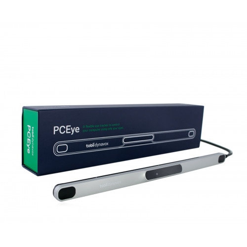
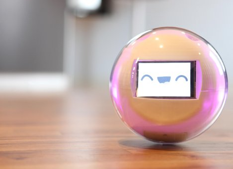

Dans cette rubrique nous allons voir plusieurs objets et logiciels permettant un confort dans l'outil informatique. Biensur nous traitons ici proncipalement des personnes atteintes de maladie cognitives cependant certains objet ou logiciel peuvent evidemment être adapté aux personnes atteintes d'autres déficience physique ou même en bonne santé. Nous avons selectionné ses aides principalement pour leur grande utilité pour les personnes car il en existe des millier il est donc necessaire de choisir l'outil le plpus adapté. Voici notre selction d'objet :
- objet 1 : la cuillère anti-tremblement
- objet 2 : Tobii PC Eye 5
- objet 3 : Leka
- Logiciel 1 : steadymouse2
- Logiciel 2 : FACIL'iti
Google X : Une cuillère anti-tremblement contre la maladie

Et non ce n'est pas une cuillère pour les bébés... Comme vous l'avez vu cette cuillère est destiné aux personnes atteintes de Parkinson. Elle permetterait à ces dernier de facilité leur quotidiens. Imaginez que vous voulez prendre une soupe pour le diner, cependant avec votre handicap vous n'arrivez pas à boir la soupe sans en mettre a côté. Et bien... cette cuillère est la solution elle permet de réduire enormément le tremblement devos main. Cette objet permet de faciliter la vie de million de personne et de leur redonné goût aux repas.
Tobii PC Eye 5

Bien que cette objet peut faire une belle décoration sur votre bureau, il en est tout aussi pratique. Le tobii pc eyes 5 va permettre de controler les outils informatique avec les yeux. Malgrè son prix de 1399€, cette outil peut s'adapter à plusieurs pathologie comme la Tétraplégie, pathologie neurologique évolutive, etc... Un outil donc bien pratique pour remplacer la souris et de donner un accès simple à l'informatique.
un petit robot du nom de Leka
Ce petit robot interractif, et tout mignon, permettant aux enfants atteint de l'autisme d'apprendre et de progresser tout en s'amusant. Conçu par de jeune francais, ce robot ,doué d'intelligence artificielle, va repondre à l'interraction de l'enfant avec différent comportement autonomes par exemple si le robot et jeté par terre il va faire un visage triste et devenir rouge. L'avantage c'est qu'avec de nombreuse application enrichie tous les mois, il va permettre à l'enfant de travailler des compétences ciblées, comme les interactions sociales et les capacités cognitives. Plus largement, Leka éveille la curiosité et encourage l’enfant à rester engagé dans une activité. Ce robot va permettre de devenir un compagnon pour l'enfant.
Des logiciels comme aide pour les handicaps cognitifs ?
De nos jour, il est plus simple pour les scientifiques et les développeurs à concevoir des logiciels pour aider les personnes atteintes de maladie cognitives. En effet de plus en plus de logiciel sont crées, nous allons vous montrez ce qui nous ont tapé dans l'oeil:
SteadyMouse2 : Pour une souris plus simple
Ce premier logiciel va permettre d'accompagner principalement les personnes atteintes vers la maladie de Parkinson . Il consiste tout simplement, une fois activé, à rendre le contrôle de la souris normal sans être parasité par des mouvement involontaire de l'utilisateur. De plus il va permettre une aide de ciblage d'icone afin de permettre a l'utilisateur de lui faciliter la tâche. Toutes les aides sont reglable en fonction du degrès de la maladie pour ajuster la sensibilité de la souris.
FACIL'iti : Une extension changeante
Le deuxième logiciel est plutôt une extension web qui va se concentré integralement sur l'affichage d'un site web. Que la personne soit malvoyante, atteinte de Parkinson ou de la dyslexie et bien d'autre forme de problème, cette extension, une fois reglé aux profil de la personne, va changer l'interface du site pour offrir un meilleur confort à l'utilisateur. Cependant, le défault de cette extension c'est qu'elle n'est pas gratuite elle prend la forme d'un abonnement mensuel.
Pour plus d'information, nous vous recommendons d'aller vers un organisme plus professionnel afin de repondre a votre demande :
=======